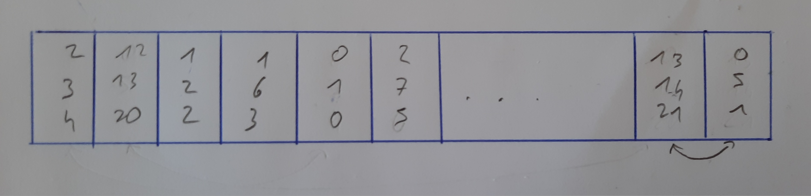

Création de toutes les arêtes entre les noeuds :
Les arêtes sont des triplets rangées dans un liste :

Ensuite il faut mélanger les arêtes :
Pseudo code :
Pour i de 0 à 20
echange_triplet(i,i+rand()%21
Fin



Avec l'algorithme des partitions, on selectionne certaines arêtes.
On selectione l'arête seulement si le noeud de depart et celui d'arrivé sont dans deux partitions différentes.
Dans ce cas on fusionne les deux partition.
Celles-ci formeront le chemin du labyrinthe.
Pseudo code :
Pour i de 0 à 21
Si partition[nd_d] != partition[nd_a]
ajout(arête[i])
fusion(partition[nd_d],partition[nd_a]
FinSi
Fin